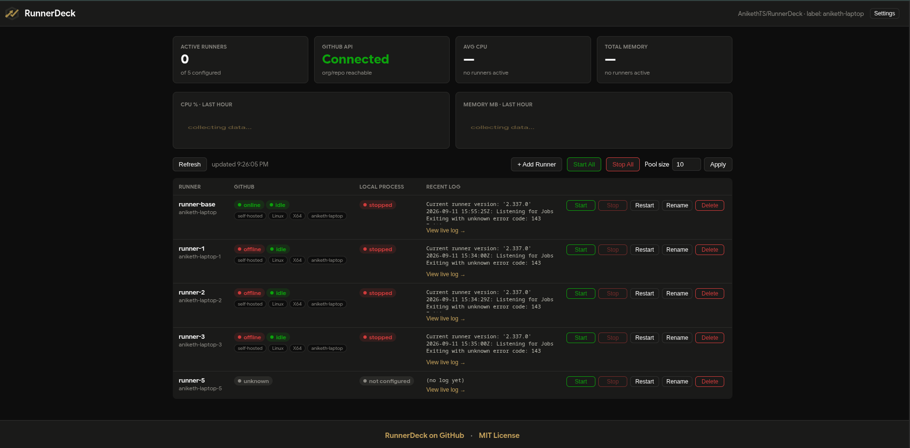
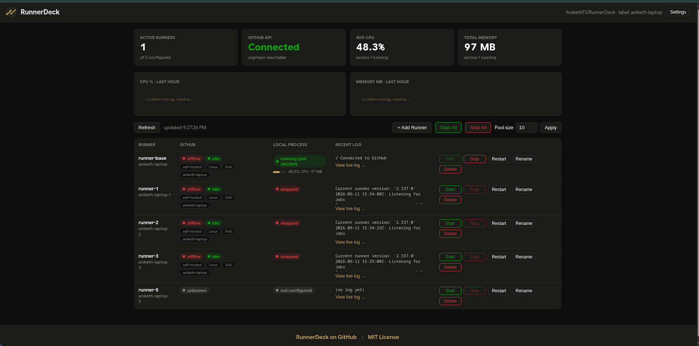
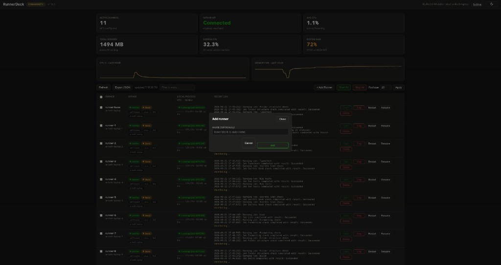
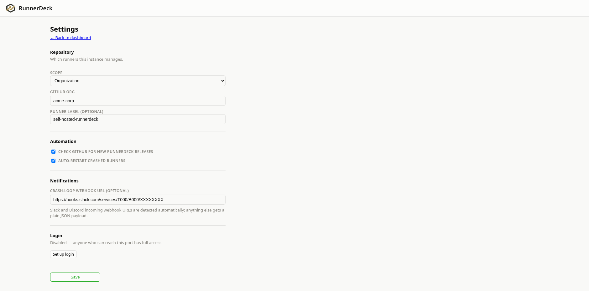

See their real GitHub-reported status, see whether the local process is
actually running, tail logs live, and start/stop/restart a whole pool,
one at a time or all at once. No hand-editing pidfiles, no SSHing in
to run ps aux | grep.
Plain PHP, no framework, no build step, no Composer dependencies. A bit of vanilla JS. That's it.




No agent, no cloud service, no telemetry. It reads the same files and calls the same GitHub API your terminal would.
Reads each runner's .runner config and runner.pid directly, with a live /proc (or ps/lsof on macOS) scan as a fallback. A runner never goes silently "invisible" just because its pidfile went stale.
Starting an unconfigured slot downloads the official runner package for your OS/arch, checksum-verifies it, requests a fresh registration token, and runs config.sh. The same flow you'd do by hand, done for you.
Before any Stop, Rename, or Delete, it checks GitHub's busy flag and asks for confirmation if the runner is mid-job, or if that status can't be verified at all.
Give a runner its own GitHub-registered name, rename it later (deregisters and re-registers cleanly), or delete it permanently. Binaries, config, and logs included.
Per-runner usage via ps, plus a rolling one-hour pool-wide history chart backed by a small local SQLite file. No fabricated trends. If there's no data, it says so.
Manage runners across a GitHub org you admin, or scope everything to one repo you own. No org access required, configurable straight from the UI with a first-run setup screen.
Localhost-only with no login by default. Want to reach it from another device? bin/setup-totp.php adds an authenticator-app code gate — put a TLS-terminating reverse proxy in front and you're covered.
Auto-restart brings a crashed runner back up, backing off after a few failed attempts instead of retrying forever. An optional webhook — Slack and Discord URLs detected automatically — tells you the moment it happens, even with no dashboard tab open.
Modern versions of Linux, macOS, and Windows, not every version ever shipped. See the README for the exact version floors.
| Platform | Support | Notes |
|---|---|---|
| Linux | Native | PHP 8.1+ with posix/pcntl. CI-tested on Ubuntu (latest + 22.04) and a dedicated Alpine/musl smoke test. |
| macOS | Native | Process liveness falls back to ps/lsof (no /proc on Darwin). CI-tested on macOS latest. |
| Windows | Via WSL2 | run.ps1 forwards into WSL2, a real Linux kernel, so it inherits the Linux support above. |
| Docker | docker compose up | Alternative to installing PHP or WSL2 at all — docker compose up --build. CI-tested build + boot on every push. |
RunnerDeck itself is free and stays that way. Cloud is for teams who'd rather not run the dashboard themselves.
What's on this page. Self-hosted and local-only, MIT licensed. It runs on your own machine and talks to your own GitHub account — nothing leaves it.
A hosted version of RunnerDeck for teams managing runners across multiple machines, with nothing to install or keep running yourself.
No .env required to get started. The dashboard walks you through setup on first load.
# clone and run, no build step, no composer install needed git clone https://github.com/AnikethTS/RunnerDeck.git cd RunnerDeck ./run.sh # binds 127.0.0.1:8090 # open http://127.0.0.1:8090/, pick org or repo scope on the setup screen # or, no PHP install needed: docker compose up --build